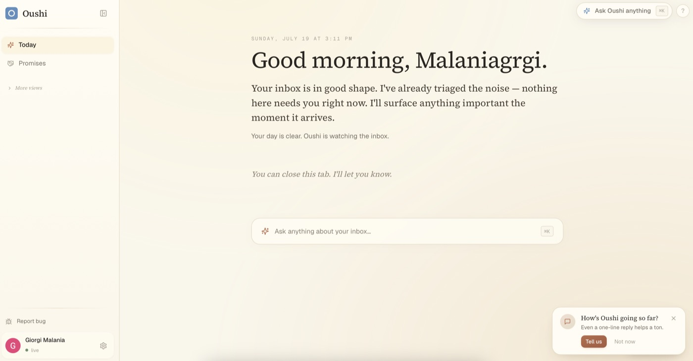
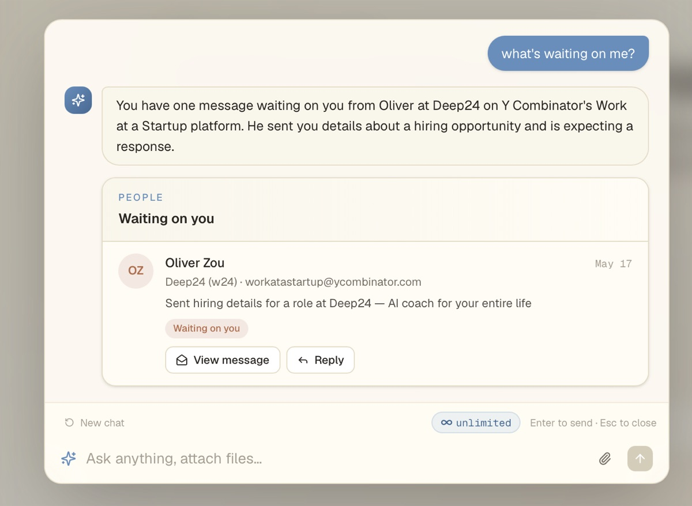
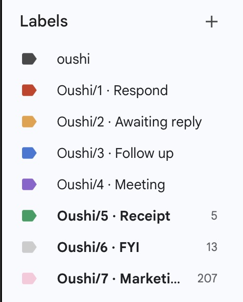

oushi
LiveA personal AI assistant built on Gmail and Google Calendar. It processes incoming mail in real time through Google's Pub/Sub push notifications, parses sender and thread context, and surfaces only the messages that require a response.
I designed and deployed the full stack: authentication, the real-time email pipeline, and the daily-brief interface.


